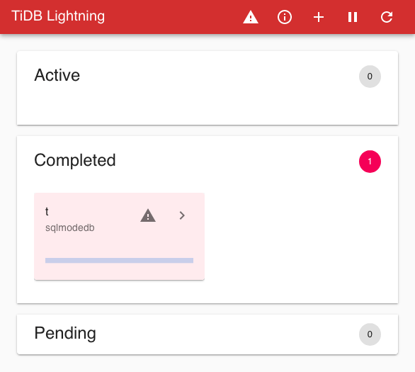
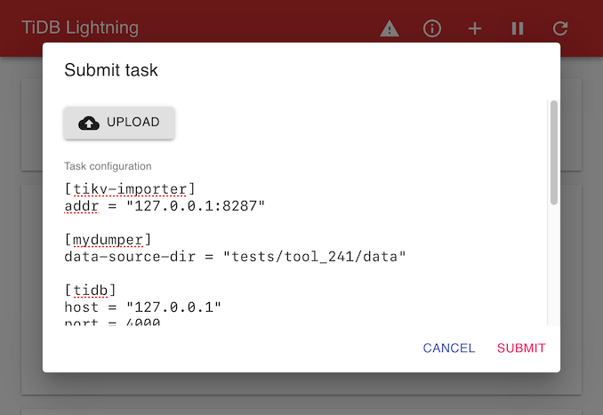
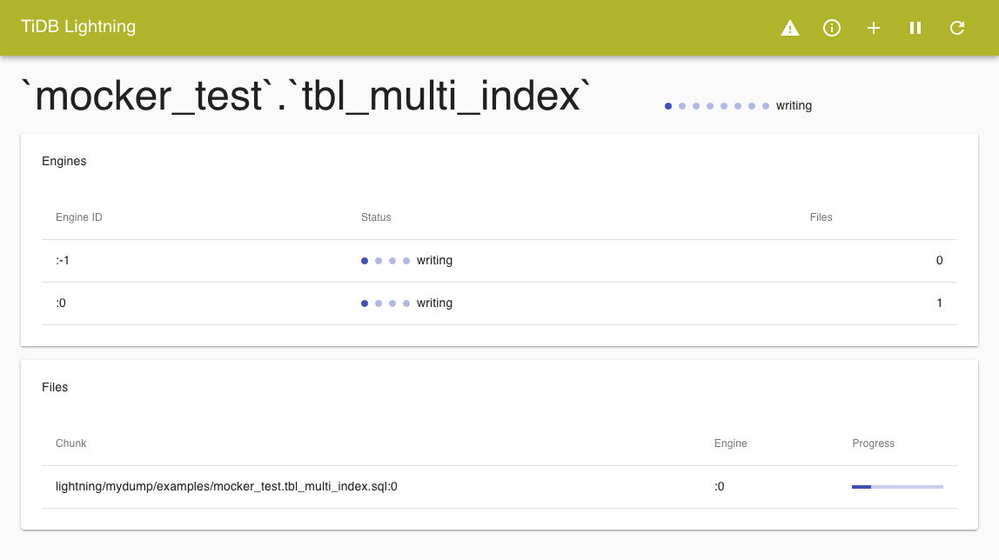
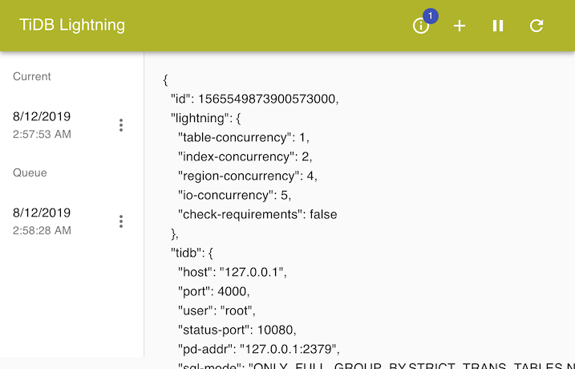
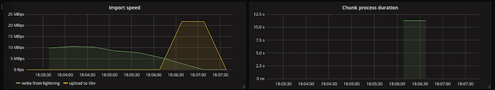
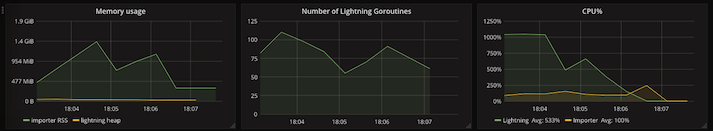
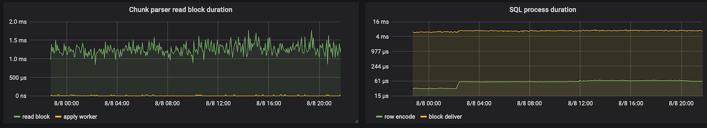
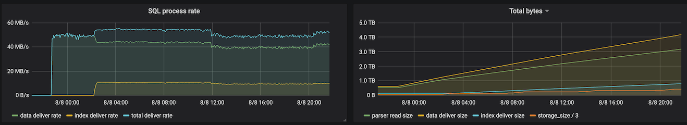
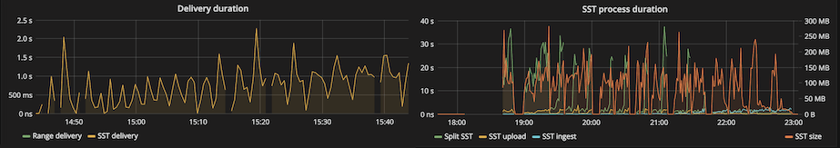

快速开始
警告
- TiDB Lightning 运行后，TiDB 集群将无法正常对外提供服务。
若
tidb-lightning崩溃，集群会留在“导入模式”。若忘记转回“普通模式”，集群会产生大量未压缩的文件，继而消耗 CPU 并导致延迟。此时，需要使用tidb-lightning-ctl手动将集群转回“普通模式”：.../tidb-ansible/resouce/bin/tidb-lightning-ctl -switch-mode=normal
数据库权限要求
TiDB Lightning 需要下游 TiDB 具有如下权限：
| 权限 | SELECT | INSERT | UPDATE | DELETE | CREATE | DROP | ALTER |
|---|---|---|---|---|---|---|---|
| 作用域 | Tables | Tables | Tables | Tables | Databases, tables | Databases, tables | Tables |
如果配置项 checksum = true，则 TiDB Lightning 需要有下游 TiDB admin 用户权限。
硬件需求
tidb-lightning和tikv-importer` 这两个组件皆为资源密集程序，建议各自单独部署。
为了保证导入效能，建议最低硬件配置如下：
tidb-lightning
- 32+ 逻辑核 CPU
- 足够储存整个数据源的 SSD 硬盘，读取速度越快越好
- 使用万兆网卡，带宽需 300 MB/s 以上
- 运行过程默认会占满 CPU，建议单独部署。条件不允许的情况下可以和其他组件（比如
tidb-server）部署在同一台机器上，然后通过配置region-concurrency限制tidb-lightning使用 CPU 资源。
tikv-importer
- 32+ 逻辑核 CPU
- 40 GB+ 内存
1 TB+ SSD 硬盘，IOPS 越高越好（要求 ≥8000）
* 硬盘必须大于最大的 N 个表的大小总和，其中 N = max(index-concurrency, table-concurrency)。使用万兆网卡，带宽需 300 MB/s 以上
- 运行过程中 CPU、I/O 和网络带宽都可能占满，建议单独部署。
如果机器充裕的话，可以部署多套 tidb-lightning + tikv-importer，然后将源数据以表为粒度进行切分，并发导入。
使用 TiDB-Ansible 部署 Lightning
此方法操作简单，不需要过多的修改配置文件。需完成 TiDB-Ansible 用户的创建、互信、 sudo 操作。
Step1： 编辑 inventory.ini，分别配置一个 IP 来部署 tidb-lightning 和 tikv-importer。
...
[importer_server]
# import_dir 为转换的中间数据存放路径
IS1 ansible_host=172.16.4.1 deploy_dir=/data/deploy tikv_importer_port=8287 import_dir=/data/import
[lightning_server]
# data_source_dir 为需导入的文件存放路径
LS1 ansible_host=172.16.4.2 deploy_dir=/data/deploy tidb_lightning_pprof_port=8289 data_source_dir=/data/wanted
...
Step2： 准备需要导入的数据放到配置文件中 data_source_dir 指定的路径。数据可以是 mydumper 备份的 sql 文件或者是 csv 文件。如果是 csv 文件，则需要做额外配置。修改 conf/tidb-lightning.yml
...
[mydumper]
no-schema: true
[mydumper.csv]
# 字段分隔符，必须为 ASCII 字符。
separator = ','
# 引用定界符，可以为 ASCII 字符或空字符。
delimiter = '"'
# CSV 文件是否包含表头。
# 如果为 true，首行将会被跳过。
header = true
# CSV 是否包含 NULL。
# 如果为 true，CSV 文件的任何列都不能解析为 NULL。
not-null = false
# 如果 `not-null` 为 false（即 CSV 可以包含 NULL），
# 为以下值的字段将会被解析为 NULL。
null = '\N'
# 是否解析字段内的反斜线转义符。
backslash-escape = true
# 是否移除以分隔符结束的行。
trim-last-separator = false
...
Step3： 初始化 Lightning 和 Importer
$ ansible-playbook bootsrap.yml -l IS1，LS
Step4： 部署 Lightning 和 Importer
$ ansible-playbook deploy.yml -l IS1，LS
或者
$ ansible-playbook deploy.yml --tags=lightning
Step5： 启动 Importer 以及 Lightning
注意，必须先启动 Importer ，再启动 Lightning ，顺序不能换。
- 登录到部署 Importer 以及 Lightning 的服务器
- 进入部署目录
- 在 Importer 目录下执行 scripts/start_importer.sh，启动 Importer
- 在 Lightning 目录下执行 scripts/start_lightning.sh，开始导入数据
Step6： 查看导入状态
- 使用 grafana 监控查看，后面会详细介绍。
- 使用日志查看
若数据顺利导入完成，lightning 日志会显示["the whole procedure completed"] ，["tidb lightning exit"]等关键信息。
Step7： 关闭 Importer
数据导入完成后，在 Importer 目录下执行 scripts/stop_importer.sh
手动部署 TiDB Lightning
从官网下载与 TiDB 版本一直的 Lightning 安装包，并将安装包上传至满足硬件要求的服务器。解压安装包后在 bin 目录下新建 tikv-importer.toml，tidb-lightning.toml，详细配置说明见后面小节，TiDB Lightning 启停等使用方式与 ansible 部署一致。
TiDB Lightning TiDB-Backend
Importer-backend 和 TiDB-backend 的区别
TiDB Lightning 的后端决定 tidb-lightning 将如何把将数据导入到目标集群中。目前，TiDB Lightning 支持 Importer-backend（默认）和 TiDB-backend 两种后端，两者导入数据的区别如下：
- Importer-backend：tidb-lightning 先将 SQL 或 CSV 数据编码成键值对，由 tikv-importer 对写入的键值对进行排序，然后把这些键值对 Ingest 到 TiKV 节点中。
- TiDB-backend：tidb-lightning 先将数据编码成 INSERT 语句，然后直接在 TiDB 节点上运行这些 SQL 语句进行数据导入。
| 后端 | Importer-backend | TiDB-backend |
|---|---|---|
| 对集群的影响 | 超大 | 小 |
| 速度 | 快 (~300 GB/小时) | 慢 (~50 GB/小时) |
| 资源使用率 | 高 | 低 |
| 导入时是否满足 ACID | 否 | 是 |
| 目标表 | 必须为空 | 可以不为空 |
TiDB Lightning TiDB-Backend 运行时，TiDB 集群可基本正常对外提供服务。
硬件需求
使用 TiDB-backend 时， TiDB Lightning 的速度仅受限于 TiDB 执行 SQL 语句的速度。因此，即使是低配的机器也足够发挥出最佳性能。推荐的硬件配置如下：
- 16 逻辑核 CPU
- 足够储存整个数据源的 SSD 硬盘，读取速度越快越好
千兆网卡
部署 TiDB-backend
使用 TiDB-backend 时，你无需部署 tikv-importer。与之前的部署相比，部署 TiDB-backend 时有如下不同：
可以跳过所有涉及 tikv-importer 的步骤。
- 必须更改相应配置申明使用的是 TiDB-backend。
Step1： 编辑 inventory.ini，[importer_server] 部分可以留空。
...
[importer_server]
# keep empty
[lightning_server]
# data_source_dir 为需导入的文件存放路径
LS1 ansible_host=172.16.4.2 deploy_dir=/data/deploy tidb_lightning_pprof_port=8289 data_source_dir=/data/wante
...
Step2： 准备需要导入的数据放到配置文件中 data_source_dir 指定的路径。同时修改 conf/tidb-lightning.yml 中的 backend 参数
tikv_importer:
backend: "tidb" # <-- 改成 “tidb”
数据可以是 mydumper 备份的 sql 文件或者是 csv 文件。如果是 csv 文件，则需要做额外配置。修改 conf/tidb-lightning.yml
...
[mydumper]
no-schema: true
[mydumper.csv]
# 字段分隔符，必须为 ASCII 字符。
separator = ','
# 引用定界符，可以为 ASCII 字符或空字符。
delimiter = '"'
# CSV 文件是否包含表头。
# 如果为 true，首行将会被跳过。
header = true
# CSV 是否包含 NULL。
# 如果为 true，CSV 文件的任何列都不能解析为 NULL。
not-null = false
# 如果 `not-null` 为 false（即 CSV 可以包含 NULL），
# 为以下值的字段将会被解析为 NULL。
null = '\N'
# 是否解析字段内的反斜线转义符。
backslash-escape = true
# 是否移除以分隔符结束的行。
trim-last-separator = false
...
Step3： 初始化 Lightning
$ ansible-playbook bootsrap.yml -l LS
Step4： 部署 Lightning
$ ansible-playbook deploy.yml -l LS
或者
$ ansible-playbook deploy.yml --tags=lightning
Step5： 启动 Lightning
- 登录到 Lightning 的服务器
- 进入部署目录
- 在 Lightning 目录下执行 scripts/start_lightning.sh，开始导入数据
Step6： 查看导入状态
使用 gafana 监控查看
使用日志查看
TiDB Lightning Web 界面
TiDB Lightning 支持在网页上查看导入进度或执行一些简单任务管理，这就是 TiDB Lightning 的服务器模式。本文将介绍服务器模式下的 Web 界面和一些常见操作。
注意
服务器模式下，TiDB Lightning 不会立即开始运行，而是通过用户在 web 页面提交（多个）任务来导入数据。
启动方式
启用服务器模式的方式有如下几种：
- 在启动 tidb-lightning 时加上命令行参数 --server-mode。
./tidb-lightning --server-mode --status-addr :8289 - 在 tidb-lightning.toml 配置文件中设置 lightning.server-mode。
TiDB Lightning 启动后，可以访问 http://127.0.0.1:8289 来管理程序（实际的 URL 取决于你的 status-addr 设置）。[lightning] server-mode = true status-addr = ':8289'TiDB Lightning Web 首页

标题栏上图标所对应的功能，从左到右依次为：
| 图标 | 功能 |
|---|---|
| “TiDB Lightning” | 点击即返回首页 |
| ⚠ | 显示前一个任务的所有错误信息 |
| ⓘ | 列出当前及队列中的任务，可能会出现一个标记提示队列中任务的数量 |
| + | 提交单个任务 |
| ⏸/▶ | 暂停/继续当前操作 |
| ⟳ | 设置网页自动刷新 |
标题栏下方的三个面板显示了不同状态下的所有表：
- Active：当前正在导入这些表
- Completed：这些表导入成功或失败
- Pending：这些表还没有被处理
每个面板都包含用于描述表状态的卡片。
提交任务
点击标题栏的 + 图标提交任务。

任务 (task) 为 TOML 格式的文件，具体参考 TiDB Lightning 任务配置。你也可以点击 UPLOAD 上传一个本地的 TOML 文件。
点击 SUBMIT 运行任务。如果当前有任务正在运行，新增任务会加入队列并在当前任务结束后执行。
查看导入进度
点击首页表格卡片上的 > 图标，查看表格导入的详细进度。

该页显示每张表的引擎文件的导入过程。
点击标题栏上的 TiDB Lightning 返回首页。
管理任务
单击标题栏上的 ⓘ 图标来管理当前及队列中的任务。

每个任务都是依据提交时间来标记。点击该任务将显示 JSON 格式的配置文件。
点击任务上的 ⋮ 可以对该任务进行管理。你可以立即停止任务，或重新排序队列中的任务。
库表过滤
TiDB Lightning通过配置黑白名单的方式来过滤掉某些数据库和表。
库过滤
[black-white-list]
do-dbs = ["pattern1", "pattern2", "pattern3"]
ignore-dbs = ["pattern4", "pattern5"]
- 如果 [black-white-list] 下的 do-dbs 列表不为空，数据库名称匹配 do-dbs 列表中任何一项，则数据库会被导入。否则，数据库会被略过。
- 如果do-dbs 列表为空，数据库名称匹配 ignore-dbs 列表中任何一项，数据库会被略过。
- 如果数据库名称同时匹配 do-dbs 和 ignore-dbs 列表，数据库会被导入。
表过滤
[[black-white-list.do-tables]] db-name = "db-pattern-1" tbl-name = "table-pattern-1" #可定义多种匹配规则 [[black-white-list.do-tables]] db-name = "db-pattern-2" tbl-name = "table-pattern-2" [[black-white-list.ignore-tables]] db-name = "db-pattern-3" tbl-name = "table-pattern-3" [[black-white-list.ignore-tables]] db-name = "db-pattern-4" tbl-name = "table-pattern-4" - 如果 do-tables 列表不为空，表的限定名称匹配 do-tables 列表中任何一对，则表会被导入，否则，表会被略过。
- 如果 do-tables 列表不空，表的限定名称匹配 ignore-tables 列表中任何一对，表会被略过。
- 如果表的限定名称同时匹配 do-tables 和 ignore-tables 列表，表会被导入。
例子：数据源存在如下库表信息：
| 库名 | 表名 |
|---|---|
| logs | messages_2016，messages_2017，messages_2018 |
| forum | messages |
| forum_backup_2016 | messages |
| forum_backup_2017 | messages |
| forum_backup_2018 | messages |
| admin | secrets |
配置文件内容如下：
[black-white-list]
do-dbs = [
"forum_backup_2018", # 规则 A
"~^(logs|forum)$", # 规则 B，首字符 ~ 会被解析为 Go 语言的正则表达式。
]
ignore-dbs = [
"~^forum_backup_", # 规则 C
]
[[black-white-list.do-tables]] # 规则 D
db-name = "logs"
tbl-name = "~_2018$"
[[black-white-list.ignore-tables]] # 规则 E
db-name = "~.*"
tbl-name = "~^messages.*"
[[black-white-list.do-tables]] # 规则 F
db-name = "~^forum.*"
tbl-name = "messages"
首先进行库过滤：
| 数据库 | 结果 |
|:----:|:----:|
| logs | 导入（规则 B） |
| forum | 导入（规则 B） |
| forum_backup_2016 | 略过（规则 C） |
| forum_backup_2017 | 略过（规则 C） |
|forum_backup_2018 | 导入（规则 A）（不会考虑规则 C） |
| admin | 略过（do-dbs 不为空，且没有匹配的项目 |
再进行表过滤：
| 表 | 结果 |
|---|---|
logs.messages_2016，logs.messages_2017 |
略过（规则 E） |
logs.messages_2018 |
导入（规则 D）（不会考虑规则 E） |
forum.users |
略过（do-tables 不为空，且没有匹配的项目） |
forum.messages |
导入（规则 F）（不会考虑规则 E） |
forum_backup_2016.messagesforum_backup_2017.messages |
略过（数据库已被剔除） |
forum_backup_2018.`message |
导入（规则 F）（不会考虑规则 E） |
admin.secrets |
略过（数据库已被剔除） |
断点续传
在数据量很大的迁移时，数据导入时间较长，长时间运行的进程有可能异常中断。若此时每次重启都从头开始导入， 会浪费大量时间。Lightning断点续传功能可以实现重启时仍然接着之前的进度继续工作。
断点续传的启用
[checkpoint]
# 启用断点续传。
# 导入时，Lightning 会记录当前进度。
enable = true
# 存储断点的方式
# - file：存放在本地文件系统（要求 v2.1.1 或以上）
# - mysql：存放在兼容 MySQL 的数据库服务器
driver = "file"
# 存储断点的架构名称（数据库名称）
# 仅在 driver = "mysql" 时生效
# schema = "tidb_lightning_checkpoint"
# 断点的存放位置
# 如果不设置改参数则默认为 `/tmp/CHECKPOINT_SCHEMA.pb`
# 若driver = "mysql"，dsn为数据库连接参数，格式为"用户:密码@tcp(地址:端口)/"。
dsn = "/tmp/tidb_lightning_checkpoint.pb"
# 导入成功后是否保留断点。默认为删除。
# keep-after-success = false
TiDB Lightning 支持两种存储方式：本地文件或 MySQL 数据库。
- 若 driver = "file"，断点会存放在一个本地文件，其路径由 dsn 参数指定。由于断点会频繁更新，建议将这个文件放到写入次数不受限制的盘上，例如 RAM disk。
- 若 driver = "mysql"，断点可以存放在任何兼容 MySQL 5.7 或以上的数据库中，包括 MariaDB 和 TiDB。在没有选择的情况下，默认会存在目标数据库里(不建议)，建议另外部署一台兼容 MySQL 的临时数据库服务器。此数据库也可以安装在 tidb-lightning 的主机上。导入完毕后可以删除。
断点续传的控制
若 tidb-lightning 因不可恢复的错误而退出（例如数据出错），重启时不会使用断点，而是直接报错离开。为保证已导入的数据安全，这些错误必须先解决掉才能继续。使用 tidb-lightning-ctl 工具可以标示已经恢复。 传入指定表清除错误数据
# 若导入 `schema`.`table` 这个表曾经出错，此命令会从目标数据库DROP这个表，清除已导入的数据，将断点重设到“未开始”的状态 # 如果 `schema`.`table` 没有出错，则无操作 $ tidb-lightning-ctl --checkpoint-error-destroy='`schema`.`table`'传入 “all” 会对所有表进行上述操作。这是最方便、安全但保守的断点错误解决方法。
$ tidb-lightning-ctl --checkpoint-error-destroy=all如果导入
schema.table这个表导入出错，发现此错误可以忽略，这条命令会清除出错状态，传入 “all” 会对所有表进行上述操作。$ tidb-lightning-ctl --checkpoint-error-ignore='`schema`.`table`' && $ tidb-lightning-ctl --checkpoint-error-ignore=all注意：除非确定错误可以忽略，否则不要使用这个选项。如果错误是真实的话，可能会导致数据不完全。启用校验和 (CHECKSUM) 可以防止数据出错被忽略。
无论是否出错，把断点清除，使用--checkpoint-remove。
$ tidb-lightning-ctl --checkpoint-remove='`schema`.`table`' && $ tidb-lightning-ctl --checkpoint-remove=all将所有断点备份到传入的文件夹，使用--checkpoint-dump
#主要用于技术支持。此选项仅于 driver = "mysql" 时有效 $ tidb-lightning-ctl --checkpoint-dump=output/directory
CSV 支持
TiDB Lightning 支持读取 CSV（逗号分隔值）的数据源，以及其他定界符格式如 TSV（制表符分隔值）。
文件名
包含整张表的 CSV 文件需命名为 db_name.table_name.csv，该文件会被解析为数据库 db_name 里名为 table_name 的表。
如果一个表分布于多个 CSV 文件，这些 CSV 文件命名需加上文件编号的后缀，如 db_name.table_name.003.csv。
文件扩展名必须为 *.csv，即使文件的内容并非逗号分隔。
表结构
CSV 文件是没有表结构的。要导入 TiDB，就必须为其提供表结构。可以通过以下任一方法实现：
- 创建包含 DDL 语句 CREATE TABLE 的文件 db_name.table_name-schema.sql。
- 首先在 TiDB 中直接创建空表，然后在 tidb-lightning.toml 中设置 [mydumper] no-schema = true。
配置
CSV 格式可在 tidb-lightning.toml 文件中 [mydumper.csv] 下配置。 大部分设置项在 MySQL LOAD DATA 语句中都有对应的项目。
[mydumper.csv]
# 字段分隔符，必须为 ASCII 字符。
separator = ','
# 引用定界符，可以为 ASCII 字符或空字符。
delimiter = '"'
# CSV 文件是否包含表头。
# 如果为 true，首行将会被跳过。
header = true
# CSV 是否包含 NULL。
# 如果为 true，CSV 文件的任何列都不能解析为 NULL。
not-null = false
# 如果 `not-null` 为 false（即 CSV 可以包含 NULL），
# 为以下值的字段将会被解析为 NULL。
null = '\N'
# 是否解析字段内的反斜线转义符。
backslash-escape = true
# 是否移除以分隔符结束的行。
trim-last-separator = false
separator
- 指定字段分隔符。
- 必须为单个 ASCII 字符。
- 常用值：
- CSV 用 ','
- TSV 用 "\t"
- 对应 LOAD DATA 语句中的 FIELDS TERMINATED BY 项。
delimiter
- 指定引用定界符。
- 如果 delimiter 为空，所有字段都会被取消引用。
- 常用值：
- '"' 使用双引号引用字段，和 RFC 4180 一致。
- '' 不引用
- 对应 LOAD DATA 语句中的 FIELDS ENCLOSED BY 项。
header
- 是否所有 CSV 文件都包含表头行。
- 如为 true，第一行会被用作列名。如为 false，第一行并无特殊性，按普通的数据行处理。
not-null 和 null
- not-null 决定是否所有字段不能为空。
- 如果 not-null 为 false，设定了 null 的字符串会被转换为 SQL NULL 而非具体数值。
引用不影响字段是否为空。
例如有如下 CSV 文件：
A,B,C
\N,"\N",
- 在默认设置（not-null = false; null = '\N'）下，列 A and B 导入 TiDB 后都将会转换为 NULL。列 C 是空字符串 ''，但并不会解析为 NULL。
backslash-escape
是否解析字段内的反斜线转义符。
如果 backslash-escape 为 true，下列转义符会被识别并转换。
| 转义符 | 转换为 | |:----|:----| | \0 | 空字符 (U+0000) | | \b | 退格 (U+0008) | | \n | 换行 (U+000A) | | \r | 回车 (U+000D) | | \t | 制表符 (U+0009) | | \Z | Windows EOF (U+001A) |
其他情况下（如 \"）反斜线会被移除，仅在字段中保留其后面的字符（"）。引用不会影响反斜线转义符的解析与否。
*对应 LOAD DATA 语句中的 FIELDS ESCAPED BY '\' 项。
trim-last-separator
将 separator 字段当作终止符，并移除尾部所有分隔符。
例如有如下 CSV 文件：
- A,,B,,
- 当 trim-last-separator = false，该文件会被解析为包含 5 个字段的行 ('A', '', 'B', '', '')。
- 当 trim-last-separator = true，该文件会被解析为包含 3 个字段的行 ('A', '', 'B')。
不可配置项
TiDB Lightning 并不完全支持 LOAD DATA 语句中的所有配置项。例如：
- 行终止符只能是 CR（\r），LF（\n）或 CRLF（\r\n），也就是说，无法自定义 LINES TERMINATED BY。
- 不可使用行前缀 （LINES STARTING BY）。
- 不可跳过表头（IGNORE n LINES）。如有表头，必须是有效的列名。
- 定界符和分隔符只能为单个 ASCII 字符。
通用配置
CSV
默认设置已按照 RFC 4180 调整。
[mydumper.csv]
separator = ','
delimiter = '"'
header = true
not-null = false
null = '\N'
backslash-escape = true
trim-last-separator = false
示例内容
ID,Region,Count
1,"East",32
2,"South",\N
3,"West",10
4,"Nor
TSV
[mydumper.csv]
separator = "\t"
delimiter = ''
header = true
not-null = false
null = 'NULL'
backslash-escape = false
trim-last-separator = false
示例内容：
ID Region Count
1 East 32
2 South NULL
3 West 10
4 North 39
TPC-H DBGEN
[mydumper.csv]
separator = '|'
delimiter = ''
header = false
not-null = true
backslash-escape = false
trim-last-separator = true
示例内容：
1|East|32|
2|South|0|
3|West|10|
4|North|39|
TiDB Lightning 配置参数
你可以使用配置文件或命令行配置 TiDB Lightning。本文主要介绍 TiDB Lightning 的全局配置、任务配置和 TiKV Importer 的配置，以及如何使用命令行进行参数配置。
配置文件
TiDB Lightning 的配置文件分为“全局”和“任务”两种类别，二者在结构上兼容。只有当服务器模式开启时，全局配置和任务配置才会有区别；默认情况下，服务器模式为禁用状态，此时 TiDB Lightning 只会执行一个任务，且全局和任务配置使用同一配置文件。
TiDB Lightning 全局配置
### tidb-lightning 全局配置
[lightning]
# 用于拉取 web 界面和 Prometheus 监控项的 HTTP 端口。设置为 0 时为禁用状态。
status-addr = ':8289'
# 切换为服务器模式并使用 web 界面
# 详情参见“TiDB Lightning web 界面”文档
server-mode = false
# 日志
level = "info"
file = "tidb-lightning.log"
max-size = 128 # MB
max-days = 28
max-backups = 14
TiDB Lightning 任务配置
### tidb-lightning 任务配置
[lightning]
# 启动之前检查集群是否满足最低需求。
# check-requirements = true
# 引擎文件的最大并行数。
# 每张表被切分成一个用于存储索引的“索引引擎”和若干存储行数据的“数据引擎”。
# 这两项设置控制两种引擎文件的最大并发数。
# 这两项设置的值会影响 tikv-importer 的内存和磁盘用量。
# 两项数值之和不能超过 tikv-importer 的 max-open-engines 的设定。
index-concurrency = 2
table-concurrency = 6
# 数据的并发数。默认与逻辑 CPU 的数量相同。
# 混合部署的情况下可以将其大小配置为逻辑 CPU 数的 75%，以限制 CPU 的使用。
# region-concurrency =
# I/O 最大并发数。I/O 并发量太高时，会因硬盘内部缓存频繁被刷新
# 而增加 I/O 等待时间，导致缓存未命中和读取速度降低。
# 对于不同的存储介质，此参数可能需要调整以达到最佳效率。
io-concurrency = 5
[checkpoint]
# 是否启用断点续传。
# 导入数据时，TiDB Lightning 会记录当前表导入的进度。
# 所以即使 Lightning 或其他组件异常退出，在重启时也可以避免重复再导入已完成的数据。
enable = true
# 存储断点的数据库名称。
schema = "tidb_lightning_checkpoint"
# 存储断点的方式。
# - file：存放在本地文件系统。
# - mysql：存放在兼容 MySQL 的数据库服务器。
driver = "file"
# dsn 是数据源名称 (data source name)，表示断点的存放位置。
# 若 driver = "file"，则 dsn 为断点信息存放的文件路径。
#若不设置该路径，则默认存储路径为“/tmp/CHECKPOINT_SCHEMA.pb”。
# 若 driver = "mysql"，则 dsn 为“用户:密码@tcp(地址:端口)/”格式的 URL。
# 若不设置该 URL，则默认会使用 [tidb] 部分指定的 TiDB 服务器来存储断点。
# 为减少目标 TiDB 集群的压力，建议指定另一台兼容 MySQL 的数据库服务器来存储断点。
# dsn = "/tmp/tidb_lightning_checkpoint.pb"
# 所有数据导入成功后是否保留断点。设置为 false 时为删除断点。
# 保留断点有利于进行调试，但会泄漏关于数据源的元数据。
# keep-after-success = false
[tikv-importer]
# 选择后端：“importer” 或 “tidb“
# backend = "importer"
# 当后端是 “importer” 时，tikv-importer 的监听地址（需改为实际地址）。
addr = "172.16.31.10:8287"
# 当后端是 “tidb” 时，插入重复数据时执行的操作。
# - replace：新数据替代已有数据
# - ignore：保留已有数据，忽略新数据
# - error：中止导入并报错
# on-duplicate = "replace"
[mydumper]
# 设置文件读取的区块大小，确保该值比数据源的最长字符串长。
read-block-size = 65536 # Byte (默认为 64 KB)
# （源数据文件）单个导入区块大小的最小值。
# Lightning 根据该值将一张大表分割为多个数据引擎文件。
batch-size = 107_374_182_400 # Byte (默认为 100 GB)
# 引擎文件需按顺序导入。由于并行处理，多个数据引擎几乎在同时被导入，
# 这样形成的处理队列会造成资源浪费。因此，为了合理分配资源，Lightning
# 稍微增大了前几个区块的大小。该参数也决定了比例系数，即在完全并发下
# “导入”和“写入”过程的持续时间比。这个值可以通过计算 1 GB 大小的
# 单张表的（导入时长/写入时长）得到。在日志文件中可以看到精确的时间。
# 如果“导入”更快，区块大小的差异就会更小；比值为 0 时则说明区块大小一致。
# 取值范围为（0 <= batch-import-ratio < 1）。
batch-import-ratio = 0.75
# mydumper 本地源数据目录。
data-source-dir = "/data/my_database"
# 如果 no-shcema = false，那么 TiDB Lightning 假设目标 TiDB 集群上
# 已有表结构，并且不会执行 `CREATE TABLE` 语句。
no-schema = false
# 指定包含 `CREATE TABLE` 语句的表结构文件的字符集。只支持下列选项：
# - utf8mb4：表结构文件必须使用 UTF-8 编码，否则 Lightning 会报错。
# - gb18030：表结构文件必须使用 GB-18030 编码，否则 Lightning 会报错。
# - auto：自动判断文件编码是 UTF-8 还是 GB-18030，两者皆非则会报错（默认）。
# - binary：不尝试转换编码。
# 注意：**数据** 文件始终解析为 binary 文件。
character-set = "auto"
# 配置 CSV 文件的解析方式。
[mydumper.csv]
# 字段分隔符，应为单个 ASCII 字符。
separator = ','
# 引用定界符，可为单个 ASCII 字符或空字符串。
delimiter = '"'
# CSV 文件是否包含表头。
# 如果 header = true，将跳过首行。
# CSV 文件是否包含 NULL。
# 如果 not-null = true，CSV 所有列都不能解析为 NULL。
not-null = false
# 如果 not-null = false（即 CSV 可以包含 NULL），
# 为以下值的字段将会被解析为 NULL。
null = '\N'
# 是否对字段内“\“进行转义
backslash-escape = true
# 如果有行以分隔符结尾，删除尾部分隔符。
trim-last-separator = false
[tidb]
# 目标集群的信息。tidb-server 的地址，填一个即可。
host = "172.16.31.1"
port = 4000
user = "root"
password = ""
# 表结构信息从 TiDB 的“status-port”获取。
status-port = 10080
# pd-server 的地址，填一个即可。
pd-addr = "172.16.31.4:2379"
# tidb-lightning 引用了 TiDB 库，并生成产生一些日志。
# 设置 TiDB 库的日志等级。
log-level = "error"
# 设置 TiDB 会话变量，提升 Checksum 和 Analyze 的速度。
# 各参数定义可参阅”控制 Analyze 并发度“文档
build-stats-concurrency = 20
distsql-scan-concurrency = 100
index-serial-scan-concurrency = 20
checksum-table-concurrency = 16
# 解析和执行 SQL 语句的默认 SQL 模式。
sql-mode = "STRICT_TRANS_TABLES,NO_ENGINE_SUBSTITUTION"
# `max-allowed-packet` 设置数据库连接允许的最大数据包大小，
# 对应于系统参数中的 `max_allowed_packet`。 如果设置为 0，
# 会使用下游数据库 global 级别的 `max_allowed_packet`。
max-allowed-packet = 67_108_864
# 数据导入完成后，tidb-lightning 可以自动执行 Checksum、Compact 和 Analyze 操作。
# 在生产环境中，建议这将些参数都设为 true。
# 执行的顺序为：Checksum -> Compact -> Analyze。
[post-restore]
# 如果设置为 true，会对所有表逐个执行 `ADMIN CHECKSUM TABLE <table>` 操作
# 来验证数据的完整性。
checksum = true
# 如果设置为 true，会在导入每张表后执行一次 level-1 Compact。
# 默认值为 false。
level-1-compact = false
# 如果设置为 true，会在导入过程结束时对整个 TiKV 集群执行一次 full Compact。
# 默认值为 false。
compact = false
# 如果设置为 true，会对所有表逐个执行 `ANALYZE TABLE <table>` 操作。
analyze = true
# 设置周期性后台操作。
# 支持的单位：h（时）、m（分）、s（秒）。
[cron]
# Lightning 自动刷新导入模式状态的持续时间，该值应小于 TiKV 对应的设定值。
switch-mode = "5m"
# 在日志中打印导入进度的持续时间。
log-progress = "5m"
# 设置表库过滤。详情参见“TiDB Lightning 表库过滤”文档。
# [black-white-list]
# ...
TiKV Importer 配置参数
# TiKV Importer 配置文件模版
# 日志文件
log-file = "tikv-importer.log"
# 日志等级：trace, debug, info, warn, error 和 off
log-level = "info"
[server]
# tikv-importer 的监听地址，tidb-lightning 需要连到这个地址进行数据写入。
addr = "192.168.20.10:8287"
# gRPC 服务器的线程池大小。
grpc-concurrency = 16
[metric]
# 给 Prometheus 客户端推送的 job 名称。
job = "tikv-importer"
# 给 Prometheus 客户端推送的间隔。
interval = "15s"
# Prometheus Pushgateway 的地址。
address = ""
[rocksdb]
# background job 的最大并发数。
max-background-jobs = 32
[rocksdb.defaultcf]
# 数据在刷新到硬盘前能存于内存的容量上限。
write-buffer-size = "1GB"
# 内存中写缓冲器的最大数量。
max-write-buffer-number = 8
# 各个压缩层级使用的算法。
# 第 0 层的算法用于压缩 KV 数据。
# 第 6 层的算法用于压缩 SST 文件。
# 第 1 至 5 层的算法目前尚未使用。
compression-per-level = ["lz4", "no", "no", "no", "no", "no", "lz4"]
[rocksdb.writecf]
# 同上
compression-per-level = ["lz4", "no", "no", "no", "no", "no", "lz4"]
[import]
# 存储引擎文件的文件夹路径
import-dir = "/mnt/ssd/data.import/"
# 处理 RPC 请求的线程数
num-threads = 16
# 导入 job 的并发数。
num-import-jobs = 24
# 预处理 Region 最长时间。
# max-prepare-duration = "5m"
# 把要导入的数据切分为这个大小的 Region。
#region-split-size = "512MB"
# 设置 stream-channel-window 的大小。
# channel 满了之后 stream 会处于阻塞状态。
# stream-channel-window = 128
# 同时打开引擎文档的最大数量。
max-open-engines = 8
# Importer 上传至 TiKV 的最大速度（字节/秒）。
# upload-speed-limit = "512MB"
# 目标存储可用空间比率（store_available_space/store_capacity）的最小值。
# 如果目标存储空间的可用比率低于该值，Importer 将会暂停上传 SST
# 来为 PD 提供足够时间进行 Regions 负载均衡。
min-available-ratio = 0.05
命令行参数
tidb-lightning
使用 tidb-lightning 可以对下列参数进行配置：
| 参数 | 描述 | 对应配置项 |
|---|---|---|
| –config file | 从 file 读取全局设置。如果没有指定则使用默认设置。 | |
| -V | 输出程序的版本 | |
| -d directory | 读取数据的目录 | mydumper.data-source-dir |
| -L level | 日志的等级： debug、info、warn、error 或 fatal (默认为 info) | lightning.log-level |
| –backend backend | 选择后端的模式：importer 或 tidb | tikv-importer.backend |
| –log-file file | 日志文件路径 | lightning.log-file |
| –status-addr ip:port | TiDB Lightning 服务器的监听地址 | lightning.status-port |
| –importer host:port | TiKV Importer 的地址 | tikv-importer.addr |
| –pd-urls host:port | PD endpoint 的地址 | tidb.pd-addr |
| –tidb-host host | TiDB Server 的 host | tidb.host |
| –tidb-port port | TiDB Server 的端口（默认为 4000） | tidb.port |
| –tidb-status port | TiDB Server 的状态端口的（默认为 10080） | tidb.status-port |
| –tidb-user user | 连接到 TiDB 的用户名 | tidb.user |
| –tidb-password password | 连接到 TiDB 的密码 | tidb.password |
如果同时对命令行参数和配置文件中的对应参数进行更改，命令行参数将优先生效。例如，在 cfg.toml 文件中，不管对日志等级做出什么修改，运行 ./tidb-lightning -L debug --config cfg.toml 命令总是将日志级别设置为 “debug”。
tidb-lightning-ctl
使用 tidb-lightning-ctl 可以对下列参数进行配置：
| 参数 | 描述 |
|---|---|
| –compact | 执行 full compact |
| –switch-mode mode | 将每个 TiKV Store 切换到指定模式（normal 或 import） |
| –import-engine uuid | 将 TiKV Importer 上关闭的引擎文件导入到 TiKV 集群 |
| –cleanup-engine uuid | 删除 TiKV Importer 上的引擎文件 |
| –checkpoint-dump folder | 将当前的断点以 CSV 格式存储到文件夹中 |
| –checkpoint-error-destroy tablename | 删除断点，如果报错则删除该表 |
| –checkpoint-error-ignore tablename | 忽略指定表中断点的报错 |
| –checkpoint-remove tablename | 无条件删除表的断点 |
tablename 必须是db.tbl 中的限定表名（包括反引号），或关键词 all。
此外，上表中所有 tidb-lightning 的参数也适用于 tidb-lightning-ctl。
tikv-importer
使用 tikv-importer 可以对下列参数进行配置：
| 参数 | 描述 | 对应配置项 |
|---|---|---|
| -C, –config file | 从 file 读取配置。如果没有指定，则使用默认设置 | |
| -V, –version | 输出程序的版本 | |
| -A, –addr ip:port | TiKV Importer 服务器的监听地址 | server.addr |
| –import-dir dir | 引擎文件的存储目录 | import.import-dir |
| –log-level level | 日志的等级： trace、debug、info、warn、error 或 off | log-level |
| –log-file file | 日志文件路径 | log-file |
TiDB Lightning 监控告警
tidb-lightning 和 tikv-importer 都支持使用 Prometheus 采集监控指标 (metrics)。本文主要介绍 TiDB Lightning 的监控配置与监控指标。
监控配置
- 如果是使用 TiDB Ansible 部署 Lightning，只要将服务器地址加到 inventory.ini 文件里的 [monitored_servers] 部分即可。
- 如果是手动部署 Lightning，则参照以下步骤进行配置。
tikv-importer
tikv-importer v2.1 使用 Pushgateway 来推送监控指标。需要配置 tikv-importer.toml 来连接 Pushgateway：
[metric]
# 给 Prometheus 客户端的推送任务名称。
job = "tikv-importer"
# 给 Prometheus 客户端的推送间隔。
interval = "15s"
# Prometheus Pushgateway 地址。
address = ""
只要 Prometheus 能发现 tidb-lightning 的监控地址，就能收集监控指标。 监控的端口可在 tidb-lightning.toml 中配置：
[lightning]
# 用于调试和 Prometheus 监控的 HTTP 端口。输入 0 关闭。
pprof-port = 8289
...
要让 Prometheus 发现 Lightning，可以将地址直接写入其配置文件，例如：
...
scrape_configs:
- job_name: 'tidb-lightning'
static_configs:
- targets: ['192.168.20.10:8289']
Grafana 面板
Grafana 的可视化面板可以让你在网页上监控 Prometheus 指标。
使用 TiDB Ansible 部署 TiDB 集群时，会同时部署一套 Grafana + Prometheus 的监控系统。
如果使用其他方式部署 TiDB Lightning，需先导入面板的 JSON 文件。
第一行：速度面板

| 面板名称 | 序列 | 描述 |
|---|---|---|
| Import speed | write from lightning | 从 TiDB Lightning 向 TiKV Importer 发送键值对的速度，取决于每个表的复杂性 |
| Import speed | upload to tikv | 从 TiKV Importer 上传 SST 文件到所有 TiKV 副本的总体速度 |
| Chunk process duration | 完全编码单个数据文件所需的平均时间 |
有时导入速度会降到 0，这是为了平衡其他部分的速度，属于正常现象。
第二行：进度面板
| 面板名称 | 描述 |
|---|---|
| Import progress | 已编码的文件所占百分比 |
| Checksum progress | 已导入的表所占百分比 |
| Failures | 导入失败的表的数量以及故障点，通常为空 |
第三行：资源使用面板

| 面板名称 | 描述 |
|---|---|
| Memory usage | 每个服务占用的内存 |
| Number of Lightning Goroutines | TiDB Lightning 使用的运行中的 goroutines 数量 |
| CPU% | 每个服务使用的逻辑 CPU 数量 |
第四行：配额使用面板

| 面板名称 | 序列 | 描述 |
|---|---|---|
| Idle workers | io | 未使用的 io-concurrency 的数量，通常接近配置值（默认为 5），接近 0 时表示磁盘运行太慢 |
| Idle workers | closed-engine | 已关闭但未清理的引擎数量，通常接近 index-concurrency 与 table-concurrency 的和（默认为 8），接近 0 时表示 TiDB Lightning 比 TiKV Importer 快，导致 TiDB Lightning 延迟 |
| Idle workers | table | 未使用的 table-concurrency 的数量，通常为 0，直到进程结束 |
| Idle workers | index | 未使用的 index-concurrency 的数量，通常为 0，直到进程结束 |
| Idle workers | region | 未使用的 region-concurrency 的数量，通常为 0，直到进程结束 |
| External resources | KV Encoder | 已激活的 KV encoder 的数量，通常与 region-concurrency 的数量相同，直到进程结束 |
| External resources | Importer Engines | 打开的引擎文件数量，不应超过 max-open-engines 的设置 |
第五行：读取速度面板

| 面板名称 | 序列 | 描述 |
|---|---|---|
| Chunk parser read block duration | read block | 读取一个字节块来准备解析时所消耗的时间 |
| Chunk parser read block duration | apply worker | 等待 io-concurrency 空闲所消耗的时间 |
| SQL process duration | row encode | 解析和编码单行所消耗的时间 |
| SQL process duration | block deliver | 将一组键值对发送到 TiKV Importer 所消耗的时间 |
如果上述项的持续时间过长，则表示 TiDB Lightning 使用的磁盘运行太慢或 I/O 太忙。
第六行：存储空间面板

| 面板名称 | 序列 | 描述 |
|---|---|---|
| SQL process rate | data deliver rate | 向 TiKV Importer 发送数据键值对的速度 |
| SQL process rate | index deliver rate | 向 TiKV Importer 发送索引键值对的速度 |
| SQL process rate | total deliver rate | 发送数据键值对及索引键值对的速度之和 |
| Total bytes | parser read size | TiDB Lightning 正在读取的字节数 |
| Total bytes | data deliver size | 已发送到 TiKV Importer 的数据键值对的字节数 |
| Total bytes | index deliver size | 已发送到 TiKV Importer 的索引键值对的字节数 |
| Total bytes | storage_size/3 | TiKV 集群占用的存储空间大小的 1/3（3 为默认的副本数量） |
第七行：导入速度面板

| 面板名称 | 序列 | 描述 |
|---|---|---|
| Delivery duration | Range delivery | 将一个 range 的键值对上传到 TiKV 集群所消耗的时间 |
| Delivery duration | SST delivery | 将单个 SST 文件上传到 TiKV 集群所消耗的时间 |
| SST process duration | Split SST | 将键值对流切分成若干 SST 文件所消耗的时间 |
| SST process duration | SST upload | 上传单个 SST 文件所消耗的时间 |
| SST process duration | SST ingest | ingest 单个 SST 文件所消耗的时间 |
| SST process duration | SST size | 单个 SST 文件的大小 |
监控指标
本节将详细描述 tikv-importer 和 tidb-lightning 的监控指标。
tikv-importer
tikv-importer 的监控指标皆以 tikvimport* 为前缀。
tikv_import_rpc_duration（直方图）
- 完成一次 RPC 用时直方图。标签：
- request：所执行 RPC 请求的类型
- switch_mode — 将一个 TiKV 节点切换为 import/normal 模式
- open_engine — 打开引擎文件
- write_engine — 接收数据并写入引擎文件
- close_engine — 关闭一个引擎文件
- import_engine — 导入一个引擎文件到 TiKV 集群中
- cleanup_engine — 删除一个引擎文件
- compact_cluster — 显式压缩 TiKV 集群
- upload — 上传一个 SST 文件
- ingest — Ingest 一个 SST 文件
- compact — 显式压缩一个 TiKV 节点
- result：RPC 请求的执行结果
- ok
- error
- request：所执行 RPC 请求的类型
tikv_import_write_chunk_bytes（直方图）
- 从 Lightning 接收的键值对区块大小（未压缩）的直方图。
tikv_import_write_chunk_duration（直方图）
- 从 tidb-lightning 接收每个键值对区块所需时间的直方图。
tikv_import_upload_chunk_bytes（直方图）
- 上传到 TiKV 的每个 SST 文件区块大小（压缩）的直方图。
tikv_import_range_delivery_duration（直方图）
- 将一个 range 的键值对发送至 dispatch-job 任务所需时间的直方图。
tikv_import_split_sst_duration（直方图）
- 将 range 从引擎文件中分离到单个 SST 文件中所需时间的直方图。
tikv_import_sst_delivery_duration（直方图）
- 将 SST 文件从 dispatch-job 任务发送到 ImportSSTJob 任务所需时间的直方图
tikv_import_sst_recv_duration（直方图）
- ImportSSTJob 任务接收从 dispatch-job 任务发送过来的 SST 文件所需时间的直方图。
tikv_import_sst_upload_duration（直方图）
- 从 ImportSSTJob 任务上传 SST 文件到 TiKV 节点所需时间的直方图。
tikv_import_sst_chunk_bytes（直方图）
- 上传到 TiKV 节点的 SST 文件（压缩）大小的直方图。
tikv_import_sst_ingest_duration（直方图）
- 将 SST 文件传入至 TiKV 所需时间的直方图。
tikv_import_each_phase（测量仪）
- 表示运行阶段。值为 1 时表示在阶段内运行，值为 0 时表示在阶段内运行。标签：
- phase：prepare / import
tikv_import_wait_store_available_count（计数器）
- 计算出现 TiKV 节点没有充足空间上传 SST 文件现象的次数。标签：
- store_id： TiKV 存储 ID。
tikv_import_upload_chunk_duration（直方图）
- 上传到 TiKV 的每个区块所需时间的直方图。
tidb-lightning
tidb-lightning 的监控指标皆以 lightning_* 为前缀。
lightning_importer_engine（计数器）
- 计算已开启及关闭的引擎文件数量。标签：
- type:
- open
- closed
- type:
lightning_idle_workers（计量表盘）
- 计算闲置的 worker。标签：
- name：
- table — 未使用的 table-concurrency 的数量，通常为 0，直到进程结束
- index — 未使用的 index-concurrency 的数量，通常为 0，直到进程结束
- region — 未使用的 region-concurrency 的数量，通常为 0，直到进程结束
- io — 未使用的 io-concurrency 的数量，通常接近配置值（默认为 5），接近 0 时表示磁盘运行太慢
- closed-engine — 已关闭但未清理的引擎数量，通常接近 index-concurrency 与 table-concurrency 的和（默认为 8），接近 0 时表示 TiDB Lightning 比 TiKV Importer 快，导致 TiDB Lightning 延迟
- name：
lightning_kv_encoder（计数器）
- 计算已开启及关闭的 KV 编码器。KV 编码器是运行于内存的 TiDB 实例，用于将 SQL 的 INSERT 语句转换成键值对。此度量的净值（开启减掉关闭）在正常情况下不应持续增长。标签：
- type:
- open
- closed
- type:
lightning_tables（计数器）
- 计算处理过的表及其状态。标签：
- state：表的状态，表明当前应执行的操作
- pending — 等待处理
- written — 所有数据已编码和传输
- closed — 所有对应的引擎文件已关闭
- imported — 所有引擎文件已上传到目标集群
- altered_auto_inc — 自增 ID 已改
- checksum — 已计算校验和
- analyzed — 已进行统计信息分析
- completed — 表格已完全导入并通过验证
- result：当前操作的执行结果
- success — 成功
- failure — 失败（未完成）
- state：表的状态，表明当前应执行的操作
lightning_engines（计数器）
- 计算处理后引擎文件的数量以及其状态。标签：
- state：引擎文件的状态，表明当前应执行的操作
- pending — 等待处理
- written — 所有数据已编码和传输
- closed — 引擎文件已关闭
- imported — 当前引擎文件已上传到目标集群
- completed — 当前引擎文件已完全导入
- result：当前操作的执行结果
- success — 成功
- failure — 失败（未完成）
- state：引擎文件的状态，表明当前应执行的操作
lightning_chunks（计数器）
- 计算处理过的 Chunks 及其状态。标签：
- state: 单个 Chunk 的状态，表明该 Chunk 当前所处的阶段
- estimated — （非状态）当前任务中 Chunk 的数量
- pending — 已载入但未执行
- running — 正在编码和发送数据
- finished — 该 Chunk 已处理完毕
- failed — 处理过程中发生错误
- state: 单个 Chunk 的状态，表明该 Chunk 当前所处的阶段
lightning_import_seconds（直方图）
- 导入每个表所需时间的直方图。
lightning_row_read_bytes（直方图）
- 单行 SQL 数据大小的直方图。
lightning_row_encode_seconds（直方图）
- 解码单行 SQL 数据到键值对所需时间的直方图。
lightning_row_kv_deliver_seconds（直方图）
- 发送一组与单行 SQL 数据对应的键值对所需时间的直方图。
lightning_block_deliver_seconds（直方图）
- 每个键值对中的区块传送到 tikv-importer 所需时间的直方图。
lightning_block_deliver_bytes（直方图）
- 发送到 Importer 的键值对中区块（未压缩）的大小的直方图。
lightning_chunk_parser_read_block_seconds（直方图）
- 数据文件解析每个 SQL 区块所需时间的直方图。
lightning_checksum_seconds（直方图）
- 计算表中 Checksum 所需时间的直方图。
lightning_apply_worker_seconds（直方图）
- 获取闲置 worker 等待时间的直方图 (参见 lightning_idle_workers 计量表盘)。标签：
- name：
- table
- index
- region
- io
- closed-engine
- name：